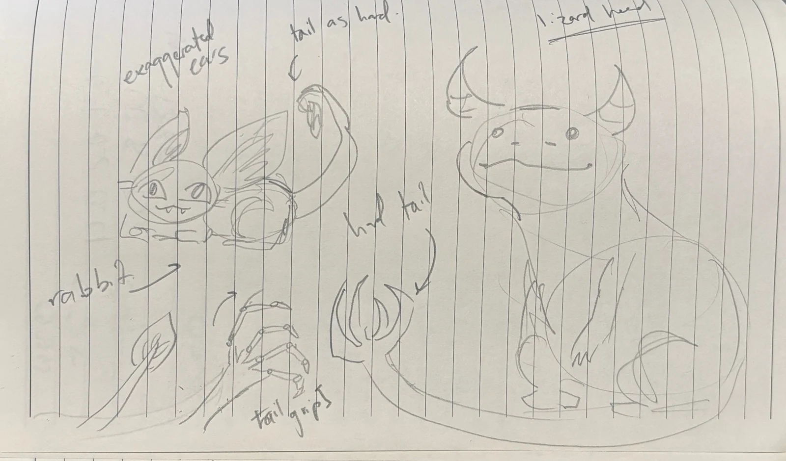
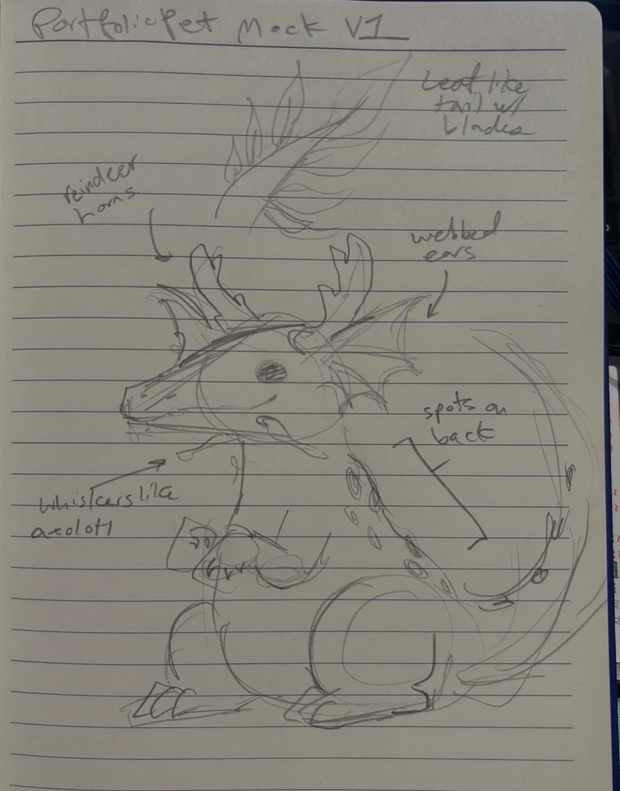
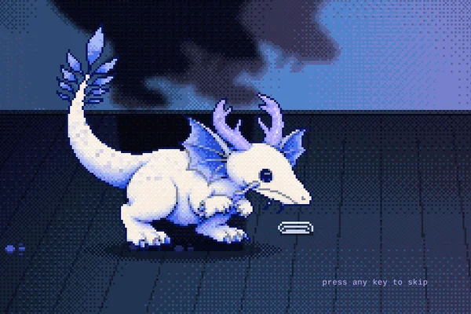
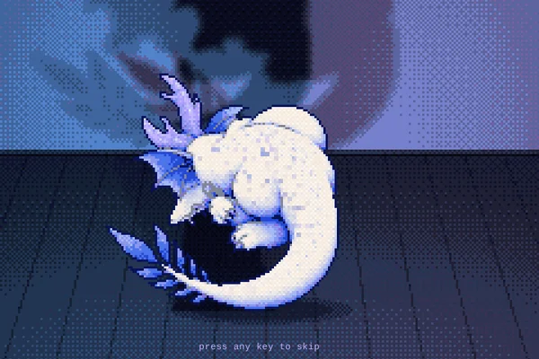
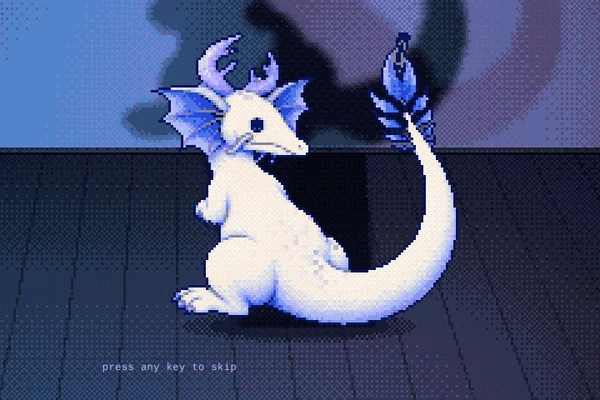
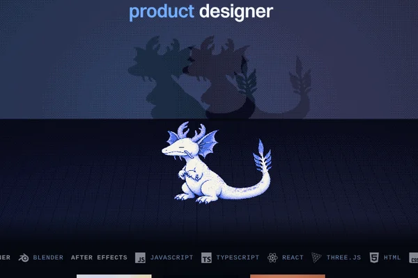
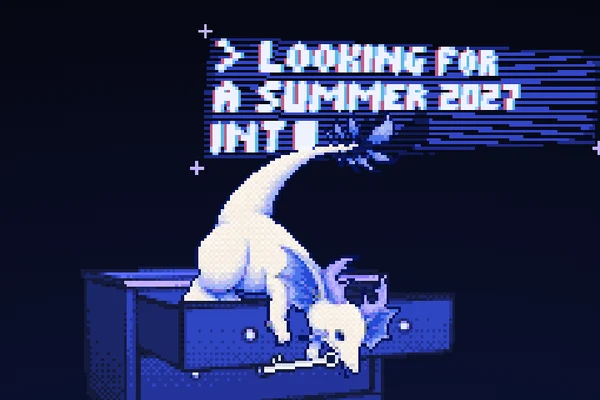
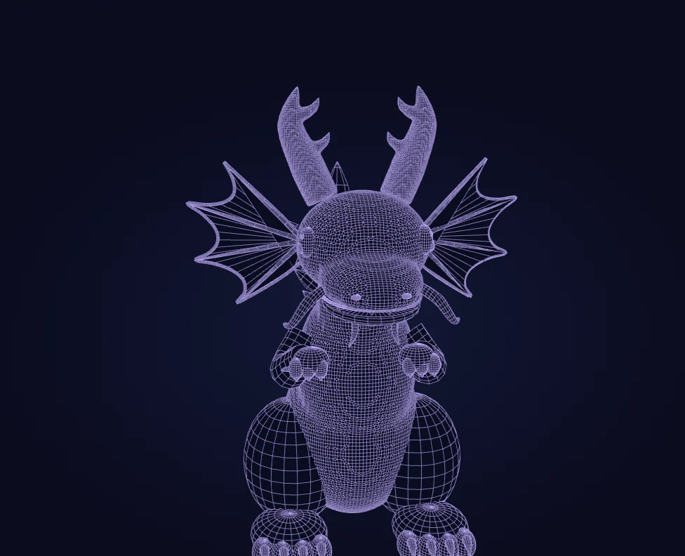
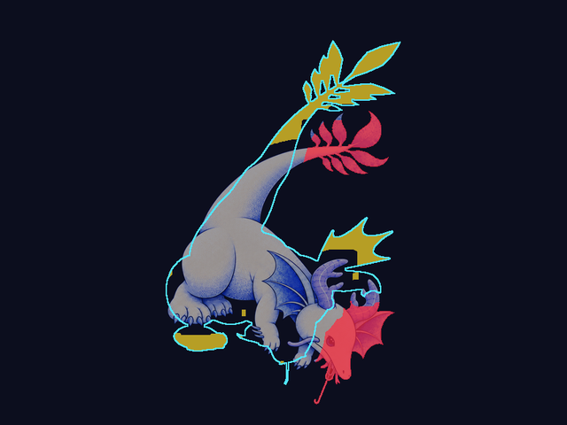
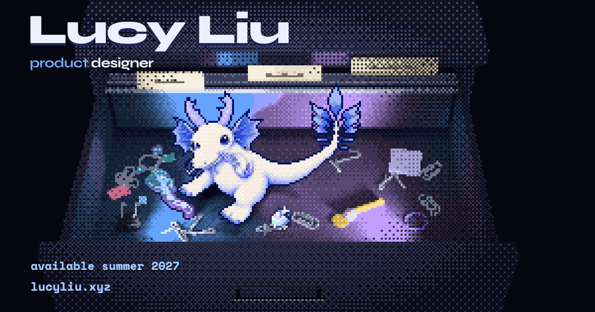

Designing the dragon who lives in my portfolio
Meet him on lucyliu.xyzOverview
Portfolios were starting to look vibe-coded, and I wanted mine to have something only I could make: a small dragon who lives in my desk drawer and moves through every room of the site. I'm a designer, not an animator, so AI did the frame-by-frame labour. The design stayed mine.
- My role
- Concept
Character design
Blender modelling
Motion direction - Tools
- Pencil and paper
Blender
Claude, Codex - Year
- 2026
Problems
Three things stood in the way.
1. Generic
AI-built portfolios were starting to look the same.
2. Untrained
I can design a character, but I'm not trained to animate one.
3. Unreliable
Image tools forget anatomy: they drew extra tail blades and missing toes.
How might I use AI as a workhorse for animation without letting it replace my hand?
Goals
Each problem became a goal.
GenericMine
A character no template has: my sketch, my rules, my world.
UntrainedAnimated
Him moving through the whole site, with no frame drawn one by one.
UnreliableChecked
Every AI drawing checked against a model I built.
Sketches first
Before opening any AI tool, I sketched three routes on paper: a rabbit whose tail grips like a hand, a lizard with a hard tail, and the one I kept.


His world before his style
He lives in a desk drawer on a dark, smoked-glass site. Of six rendering studies, I kept pixel art because it matched the site's rooms.
His first move
I storyboarded his opening before any frame existed, and it shipped as boarded.

1 · A paperclip lies on the screen, just its shadow under it. 
2 · He jumps on it and rolls around, holding it to his chest. 
3 · He holds it by his tail and waddles off. 
4 · The hero loads. 
5 · In About, the clip is in his desk, bent into a key.
Anatomy rules
I wrote his anatomy down: four toes, nine tail blades, whiskers above the mouth. AI drew concepts to those rules, and I directed every revision.


A model as the answer key
I modelled his body in Blender; AI wrote the bones and actions. Every pose is set on the model before anything is drawn.


Checking AI against the model
Each AI drawing is laid over the model from the same camera. Anything that doesn't match goes back.

Back to 2D
Approved drawings become pixel frames in the site's palette. I don't render him straight from Blender: it's too taxing, and it loses the drawing's warmth.

The link preview
My first cover's perspective looked wrong, so I staged the drawer and his hoard at real scale in Blender, then painted the scene back to pixels.

What shipped
He's the first thing people meet.
He wakes in the hero, guards the About drawer and plays the loading screens.
He travels with every link I share.
The link preview is his drawer scene.
No pose ships unchecked.
Every new drawing is laid over the model before it goes live.
What I learned
Write the rules down.
AI never remembered his toe count. A written anatomy list did.
Check with geometry, then taste.
The model catches wrong poses and missing parts. Claws and spines still need my eye.
AI scales the work, not the choices.
It drew thousands of frames, but every pose, scene and rejection was my call.
AI image tools drew the master illustration and key poses from my sketch, rules and model poses. Claude and Codex wrote the rig, scene scripts, frame tools and site code. I made the sketches, the Blender model and every motion idea, and approved or rejected every frame. See every saved frame →